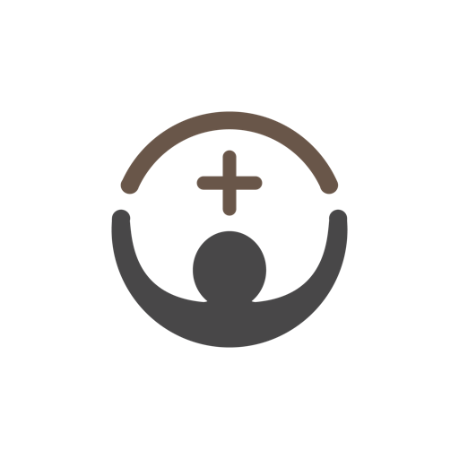
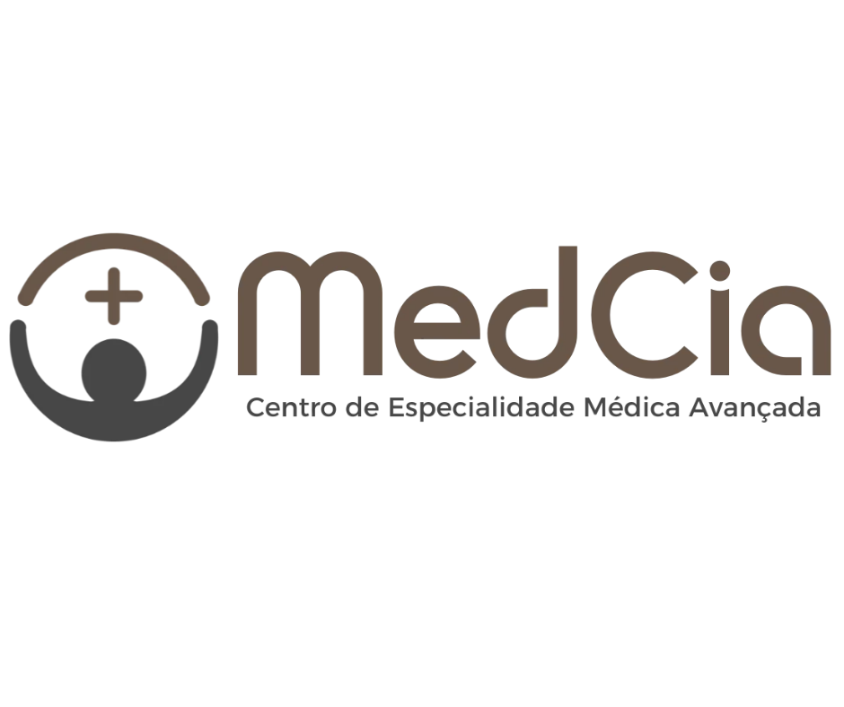
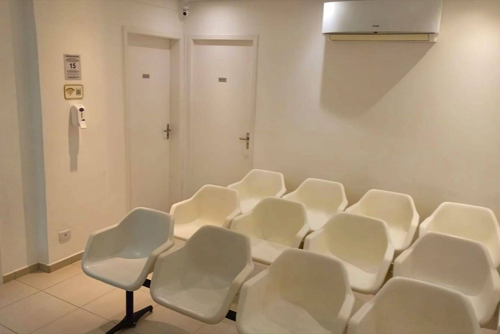
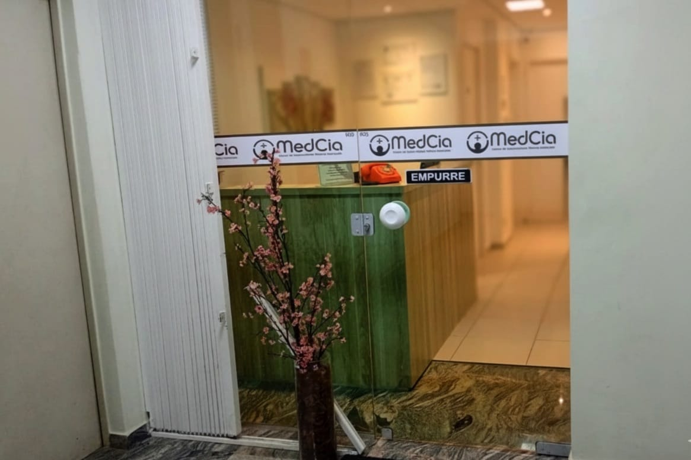
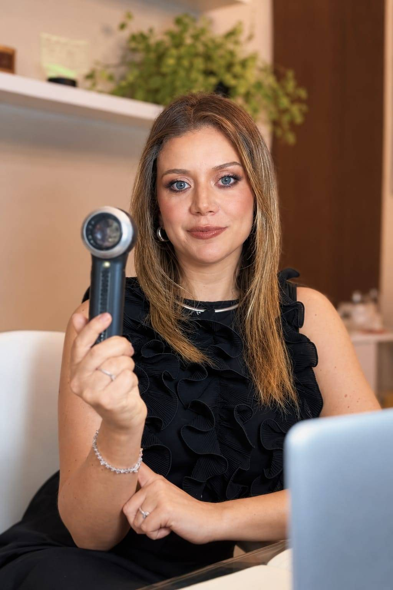
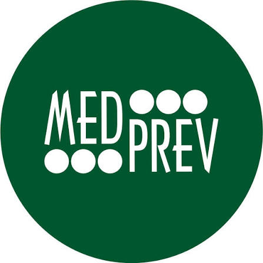
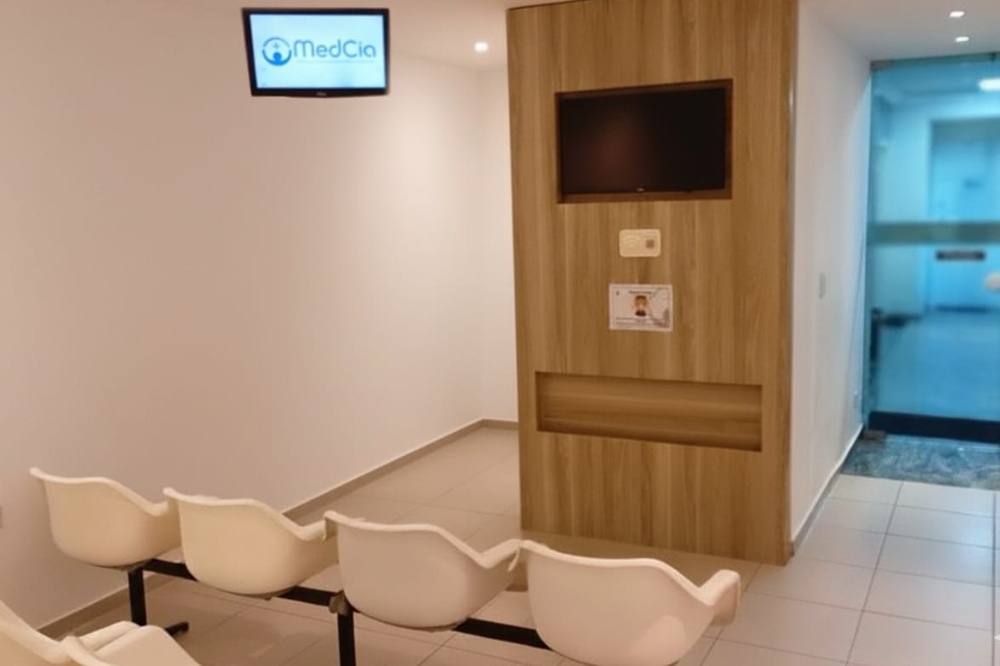

Clínica médica
Consultas, check-ups, prevenção e avaliação de sintomas para cuidar da saúde de forma integral.


Especialistas e um corpo clínico de excelência para cuidar da sua saúde.
Exames para auxiliar na avaliação e no cuidado com a saúde.
Na MedCia, você encontra cuidado e orientação em diferentes etapas da sua saúde.
Conheça nossos atendimentos, procedimentos e exames.
Consultas, check-ups, prevenção e avaliação de sintomas para cuidar da saúde de forma integral.
Atestados e avaliações ocupacionais: Admissionais, Periódicos, Demissionais.
Cuidados como remoção de cerúmen e procedimentos voltados ao alívio da dor.
Avaliação e acompanhamento de condições da pele, com orientação médica individualizada.
Procedimentos de dermatologia cirúrgica e exames, fazemos também Patch Test e Prick Test conforme avaliação médica.
Exames para auxiliar a avaliação da pele e apoiar a investigação clínica.
Consultas para cuidado da saúde mental, incluindo teleconsulta e avaliação para laudos.
Procedimento de cuidado da pele realizado de acordo com a avaliação e a necessidade de cada pessoa.


A MedCia Clínica Médica é um centro de especialidades médicas em Curitiba, com atendimento em clínica geral, dermatologia e psiquiatria. Nosso compromisso é oferecer cuidado responsável, orientação clara e acolhimento em cada etapa do atendimento.
Conheça nossa estruturaAtendimento em diferentes especialidades, com atenção às necessidades de cada paciente.
MedCia Clínica Médica
Há histórias que nascem de um propósito. A nossa nasceu do amor pela vida e pelo cuidado com as pessoas.
Há 15 anos, a MedCia Clínica Médica constrói uma trajetória dedicada à saúde, ao bem-estar e à qualidade de vida. Mais do que reunir diferentes especialidades médicas em um só lugar, acreditamos que cuidar da saúde é também acolher, ouvir, compreender e respeitar a história de cada pessoa.
Nossa equipe reúne profissionais qualificados, estrutura integrada e recursos tecnológicos que contribuem para um atendimento personalizado, seguro e comprometido com a qualidade. Tudo isso com um propósito que permanece no centro de cada escolha: oferecer uma medicina mais humana, próxima e atenta às necessidades de cada paciente.
A essência da MedCia carrega o legado de sua fundadora, Dra. Valdecira Flaubert Jassus, a nossa querida Dra. Val (in memoriam), médica dermatologista que dedicou sua vida à medicina e ao cuidado com o próximo.
Com sensibilidade, generosidade e profunda dedicação às pessoas, a Dra. Val deixou muito mais do que uma história profissional. Deixou um exemplo de humanidade, uma forma especial de cuidar e valores que continuam inspirando todos aqueles que fazem parte da nossa trajetória.
Foi a partir de sua visão e de seu propósito que nasceu a MedCia. E é com orgulho e gratidão que seguimos construindo essa história, preservando aquilo que sempre nos definiu: o respeito, a ética, o acolhimento e o compromisso com a vida.
Sabemos que cada pessoa tem necessidades, expectativas e histórias únicas. Por isso, acreditamos que um bom atendimento começa muito antes de qualquer procedimento: começa na escuta, na atenção aos detalhes e na confiança construída em cada encontro.
Na MedCia, buscamos proporcionar uma experiência em que você se sinta acolhido, respeitado e seguro, com acesso a diferentes especialidades e um cuidado pensado para tornar sua jornada de saúde mais prática, integrada e humanizada.
Nosso compromisso é cuidar de você por inteiro, com competência, empatia e respeito à sua individualidade.
MedCia Clínica Médica.
Cuidado além dos sintomas. Atenção que acolhe. Compromisso com a vida.
Em memória da Dra. Val, cuja essência permanece viva em cada gesto de cuidado e em cada vida tocada por sua história.
Profissionais qualificados, comprometidos com o seu cuidado em todas as etapas.
Unisul — Universidade do Sul de Santa Catarina
Residência — Noruspar / RQE 29394
Residência — Hospital Erasto Gaertner / RQE 28491
ISBRAE
Universidade de Ciências Médicas de La Habana — UCMH (2017)
Certificação Internacional — American Heart Association / PUCPR
Consulta da criança e da mulher no puerpério na primeira semana de vida, na Atenção Primária à Saúde — UFSC / UNA-SUS
Faculdade Pequeno Príncipe — FPP
Centro Universitário Católico Ítalo Brasileiro (não especialista)
Universidade de Pernambuco — UPE (1999)
Incisa (2007) — não especialista
Incisa (2004) — não especialista
UFMG / NESCON
Faculdade Evangélica Mackenzie do Paraná — FEMPAR (2016)
ISMD — não especialista
Membro da SBD
Pontifícia Universidade Católica de Goiás — PUC-GO
Hospital de Clínicas da UFPR — HC-UFPR

Pontifícia Universidade Católica do Paraná — PUCPR
BWS
Atuação em dermatologia, com atendimento orientado às necessidades individuais de cada paciente.
Cada avaliação reflete uma experiência de cuidado, escuta e confiança.
Conheça alguns depoimentos de pacientes que já passaram pelo nosso atendimento.
Conheça os convênios disponíveis na MedCia. A cobertura pode variar conforme o plano e o serviço; confirme as condições com nossa equipe antes de agendar.

MedprevQueremos que sua experiência comece com conforto, privacidade e tranquilidade desde o primeiro atendimento.

Rua 24 de Maio, 262 – Edifício Comercial Washington, 9º andar, CJ 905, Centro, Curitiba – PR | CEP: 80230-080
A 350 m da Praça Rui Barbosa, ao lado da ASPP. Com acessibilidade para pessoas com deficiência.
Consulte a equipe para confirmar os horários de atendimento.